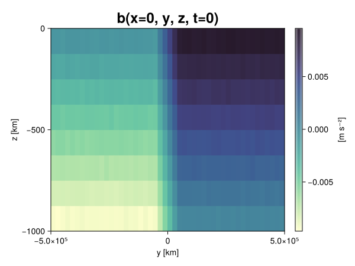
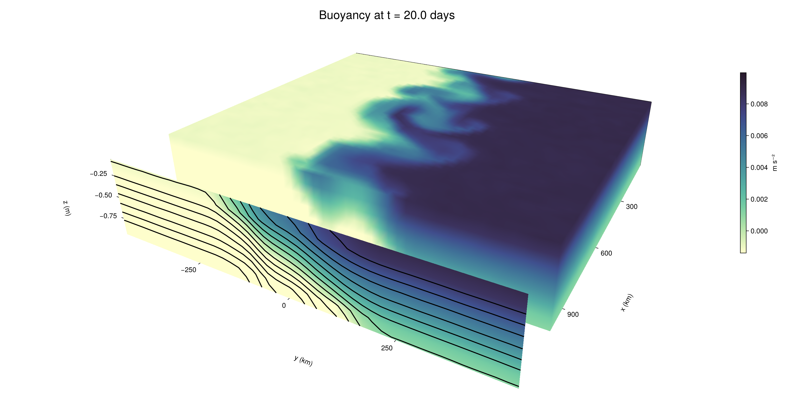

Baroclinic adjustment
In this example, we simulate the evolution and equilibration of a baroclinically unstable front.
Install dependencies
First let's make sure we have all required packages installed.
using Pkg
pkg"add Oceananigans, CairoMakie"using Oceananigans
using Oceananigans.UnitsGrid
We use a three-dimensional channel that is periodic in the x direction:
Lx = 1000kilometers # east-west extent [m]
Ly = 1000kilometers # north-south extent [m]
Lz = 1kilometers # depth [m]
grid = RectilinearGrid(size = (48, 48, 8),
x = (0, Lx),
y = (-Ly/2, Ly/2),
z = (-Lz, 0),
topology = (Periodic, Bounded, Bounded))48×48×8 RectilinearGrid{Float64, Periodic, Bounded, Bounded} on CPU with 3×3×3 halo
├── Periodic x ∈ [0.0, 1.0e6) regularly spaced with Δx=20833.3
├── Bounded y ∈ [-500000.0, 500000.0] regularly spaced with Δy=20833.3
└── Bounded z ∈ [-1000.0, 0.0] regularly spaced with Δz=125.0Model
We built a HydrostaticFreeSurfaceModel with an ImplicitFreeSurface solver. Regarding Coriolis, we use a beta-plane centered at 45° South.
model = HydrostaticFreeSurfaceModel(; grid,
coriolis = BetaPlane(latitude = -45),
buoyancy = BuoyancyTracer(),
tracers = :b,
momentum_advection = WENO(),
tracer_advection = WENO())HydrostaticFreeSurfaceModel{CPU, RectilinearGrid}(time = 0 seconds, iteration = 0)
├── grid: 48×48×8 RectilinearGrid{Float64, Periodic, Bounded, Bounded} on CPU with 3×3×3 halo
├── timestepper: QuasiAdamsBashforth2TimeStepper
├── tracers: b
├── closure: Nothing
├── buoyancy: BuoyancyTracer with ĝ = NegativeZDirection()
├── free surface: ImplicitFreeSurface with gravitational acceleration 9.80665 m s⁻²
│ └── solver: FFTImplicitFreeSurfaceSolver
├── advection scheme:
│ ├── momentum: WENO reconstruction order 5
│ └── b: WENO reconstruction order 5
└── coriolis: BetaPlane{Float64}We start our simulation from rest with a baroclinically unstable buoyancy distribution. We use ramp(y, Δy), defined below, to specify a front with width Δy and horizontal buoyancy gradient M². We impose the front on top of a vertical buoyancy gradient N² and a bit of noise.
"""
ramp(y, Δy)
Linear ramp from 0 to 1 between -Δy/2 and +Δy/2.
For example:
```
y < -Δy/2 => ramp = 0
-Δy/2 < y < -Δy/2 => ramp = y / Δy
y > Δy/2 => ramp = 1
```
"""
ramp(y, Δy) = min(max(0, y/Δy + 1/2), 1)
N² = 1e-5 # [s⁻²] buoyancy frequency / stratification
M² = 1e-7 # [s⁻²] horizontal buoyancy gradient
Δy = 100kilometers # width of the region of the front
Δb = Δy * M² # buoyancy jump associated with the front
ϵb = 1e-2 * Δb # noise amplitude
bᵢ(x, y, z) = N² * z + Δb * ramp(y, Δy) + ϵb * randn()
set!(model, b=bᵢ)Let's visualize the initial buoyancy distribution.
using CairoMakie
# Build coordinates with units of kilometers
x, y, z = 1e-3 .* nodes(grid, (Center(), Center(), Center()))
b = model.tracers.b
fig, ax, hm = heatmap(view(b, 1, :, :),
colormap = :deep,
axis = (xlabel = "y [km]",
ylabel = "z [km]",
title = "b(x=0, y, z, t=0)",
titlesize = 24))
Colorbar(fig[1, 2], hm, label = "[m s⁻²]")
fig
Simulation
Now let's build a Simulation.
simulation = Simulation(model, Δt=20minutes, stop_time=20days)Simulation of HydrostaticFreeSurfaceModel{CPU, RectilinearGrid}(time = 0 seconds, iteration = 0)
├── Next time step: 20 minutes
├── Elapsed wall time: 0 seconds
├── Wall time per iteration: NaN days
├── Stop time: 20 days
├── Stop iteration : Inf
├── Wall time limit: Inf
├── Callbacks: OrderedDict with 4 entries:
│ ├── stop_time_exceeded => Callback of stop_time_exceeded on IterationInterval(1)
│ ├── stop_iteration_exceeded => Callback of stop_iteration_exceeded on IterationInterval(1)
│ ├── wall_time_limit_exceeded => Callback of wall_time_limit_exceeded on IterationInterval(1)
│ └── nan_checker => Callback of NaNChecker for u on IterationInterval(100)
├── Output writers: OrderedDict with no entries
└── Diagnostics: OrderedDict with no entriesWe add a TimeStepWizard callback to adapt the simulation's time-step,
conjure_time_step_wizard!(simulation, IterationInterval(20), cfl=0.2, max_Δt=20minutes)Also, we add a callback to print a message about how the simulation is going,
using Printf
wall_clock = Ref(time_ns())
function print_progress(sim)
u, v, w = model.velocities
progress = 100 * (time(sim) / sim.stop_time)
elapsed = (time_ns() - wall_clock[]) / 1e9
@printf("[%05.2f%%] i: %d, t: %s, wall time: %s, max(u): (%6.3e, %6.3e, %6.3e) m/s, next Δt: %s\n",
progress, iteration(sim), prettytime(sim), prettytime(elapsed),
maximum(abs, u), maximum(abs, v), maximum(abs, w), prettytime(sim.Δt))
wall_clock[] = time_ns()
return nothing
end
add_callback!(simulation, print_progress, IterationInterval(100))Diagnostics/Output
Here, we save the buoyancy, $b$, at the edges of our domain as well as the zonal ($x$) average of buoyancy.
u, v, w = model.velocities
ζ = ∂x(v) - ∂y(u)
B = Average(b, dims=1)
U = Average(u, dims=1)
V = Average(v, dims=1)
filename = "baroclinic_adjustment"
save_fields_interval = 0.5day
slicers = (east = (grid.Nx, :, :),
north = (:, grid.Ny, :),
bottom = (:, :, 1),
top = (:, :, grid.Nz))
for side in keys(slicers)
indices = slicers[side]
simulation.output_writers[side] = JLD2OutputWriter(model, (; b, ζ);
filename = filename * "_$(side)_slice",
schedule = TimeInterval(save_fields_interval),
overwrite_existing = true,
indices)
end
simulation.output_writers[:zonal] = JLD2OutputWriter(model, (; b=B, u=U, v=V);
filename = filename * "_zonal_average",
schedule = TimeInterval(save_fields_interval),
overwrite_existing = true)JLD2OutputWriter scheduled on TimeInterval(12 hours):
├── filepath: baroclinic_adjustment_zonal_average.jld2
├── 3 outputs: (b, u, v)
├── array type: Array{Float64}
├── including: [:grid, :coriolis, :buoyancy, :closure]
├── file_splitting: NoFileSplitting
└── file size: 31.6 KiBNow we're ready to run.
@info "Running the simulation..."
run!(simulation)
@info "Simulation completed in " * prettytime(simulation.run_wall_time)[ Info: Running the simulation...
[ Info: Initializing simulation...
[00.00%] i: 0, t: 0 seconds, wall time: 29.364 seconds, max(u): (0.000e+00, 0.000e+00, 0.000e+00) m/s, next Δt: 20 minutes
[ Info: ... simulation initialization complete (28.025 seconds)
[ Info: Executing initial time step...
[ Info: ... initial time step complete (18.862 seconds).
[06.94%] i: 100, t: 1.389 days, wall time: 37.772 seconds, max(u): (1.292e-01, 1.153e-01, 1.462e-03) m/s, next Δt: 20 minutes
[13.89%] i: 200, t: 2.778 days, wall time: 1.042 seconds, max(u): (2.309e-01, 1.889e-01, 1.702e-03) m/s, next Δt: 20 minutes
[20.83%] i: 300, t: 4.167 days, wall time: 959.850 ms, max(u): (2.968e-01, 2.926e-01, 1.791e-03) m/s, next Δt: 20 minutes
[27.78%] i: 400, t: 5.556 days, wall time: 955.139 ms, max(u): (3.929e-01, 4.342e-01, 1.957e-03) m/s, next Δt: 20 minutes
[34.72%] i: 500, t: 6.944 days, wall time: 864.140 ms, max(u): (4.987e-01, 6.208e-01, 2.226e-03) m/s, next Δt: 20 minutes
[41.67%] i: 600, t: 8.333 days, wall time: 797.325 ms, max(u): (6.377e-01, 9.149e-01, 3.106e-03) m/s, next Δt: 20 minutes
[48.61%] i: 700, t: 9.722 days, wall time: 910.762 ms, max(u): (9.673e-01, 1.208e+00, 3.872e-03) m/s, next Δt: 20 minutes
[55.56%] i: 800, t: 11.111 days, wall time: 1.059 seconds, max(u): (1.326e+00, 1.207e+00, 4.781e-03) m/s, next Δt: 20 minutes
[62.50%] i: 900, t: 12.500 days, wall time: 909.162 ms, max(u): (1.480e+00, 1.075e+00, 4.452e-03) m/s, next Δt: 20 minutes
[69.44%] i: 1000, t: 13.889 days, wall time: 935.402 ms, max(u): (1.308e+00, 1.105e+00, 2.985e-03) m/s, next Δt: 20 minutes
[76.39%] i: 1100, t: 15.278 days, wall time: 893.408 ms, max(u): (1.297e+00, 9.426e-01, 2.545e-03) m/s, next Δt: 20 minutes
[83.33%] i: 1200, t: 16.667 days, wall time: 926.020 ms, max(u): (1.292e+00, 1.074e+00, 1.991e-03) m/s, next Δt: 20 minutes
[90.28%] i: 1300, t: 18.056 days, wall time: 937.689 ms, max(u): (1.338e+00, 1.162e+00, 2.221e-03) m/s, next Δt: 20 minutes
[97.22%] i: 1400, t: 19.444 days, wall time: 881.146 ms, max(u): (1.259e+00, 1.117e+00, 2.297e-03) m/s, next Δt: 20 minutes
[ Info: Simulation is stopping after running for 1.054 minutes.
[ Info: Simulation time 20 days equals or exceeds stop time 20 days.
[ Info: Simulation completed in 1.055 minutes
Visualization
All that's left is to make a pretty movie. Actually, we make two visualizations here. First, we illustrate how to make a 3D visualization with Makie's Axis3 and Makie.surface. Then we make a movie in 2D. We use CairoMakie in this example, but note that using GLMakie is more convenient on a system with OpenGL, as figures will be displayed on the screen.
using CairoMakieThree-dimensional visualization
We load the saved buoyancy output on the top, north, and east surface as FieldTimeSerieses.
filename = "baroclinic_adjustment"
sides = keys(slicers)
slice_filenames = NamedTuple(side => filename * "_$(side)_slice.jld2" for side in sides)
b_timeserieses = (east = FieldTimeSeries(slice_filenames.east, "b"),
north = FieldTimeSeries(slice_filenames.north, "b"),
top = FieldTimeSeries(slice_filenames.top, "b"))
B_timeseries = FieldTimeSeries(filename * "_zonal_average.jld2", "b")
times = B_timeseries.times
grid = B_timeseries.grid48×48×8 RectilinearGrid{Float64, Periodic, Bounded, Bounded} on CPU with 3×3×3 halo
├── Periodic x ∈ [0.0, 1.0e6) regularly spaced with Δx=20833.3
├── Bounded y ∈ [-500000.0, 500000.0] regularly spaced with Δy=20833.3
└── Bounded z ∈ [-1000.0, 0.0] regularly spaced with Δz=125.0We build the coordinates. We rescale horizontal coordinates to kilometers.
xb, yb, zb = nodes(b_timeserieses.east)
xb = xb ./ 1e3 # convert m -> km
yb = yb ./ 1e3 # convert m -> km
Nx, Ny, Nz = size(grid)
x_xz = repeat(x, 1, Nz)
y_xz_north = y[end] * ones(Nx, Nz)
z_xz = repeat(reshape(z, 1, Nz), Nx, 1)
x_yz_east = x[end] * ones(Ny, Nz)
y_yz = repeat(y, 1, Nz)
z_yz = repeat(reshape(z, 1, Nz), grid.Ny, 1)
x_xy = x
y_xy = y
z_xy_top = z[end] * ones(grid.Nx, grid.Ny)Then we create a 3D axis. We use zonal_slice_displacement to control where the plot of the instantaneous zonal average flow is located.
fig = Figure(size = (1600, 800))
zonal_slice_displacement = 1.2
ax = Axis3(fig[2, 1],
aspect=(1, 1, 1/5),
xlabel = "x (km)",
ylabel = "y (km)",
zlabel = "z (m)",
xlabeloffset = 100,
ylabeloffset = 100,
zlabeloffset = 100,
limits = ((x[1], zonal_slice_displacement * x[end]), (y[1], y[end]), (z[1], z[end])),
elevation = 0.45,
azimuth = 6.8,
xspinesvisible = false,
zgridvisible = false,
protrusions = 40,
perspectiveness = 0.7)Axis3()We use data from the final savepoint for the 3D plot. Note that this plot can easily be animated by using Makie's Observable. To dive into Observables, check out Makie.jl's Documentation.
n = length(times)41Now let's make a 3D plot of the buoyancy and in front of it we'll use the zonally-averaged output to plot the instantaneous zonal-average of the buoyancy.
b_slices = (east = interior(b_timeserieses.east[n], 1, :, :),
north = interior(b_timeserieses.north[n], :, 1, :),
top = interior(b_timeserieses.top[n], :, :, 1))
# Zonally-averaged buoyancy
B = interior(B_timeseries[n], 1, :, :)
clims = 1.1 .* extrema(b_timeserieses.top[n][:])
kwargs = (colorrange=clims, colormap=:deep, shading=NoShading)
surface!(ax, x_yz_east, y_yz, z_yz; color = b_slices.east, kwargs...)
surface!(ax, x_xz, y_xz_north, z_xz; color = b_slices.north, kwargs...)
surface!(ax, x_xy, y_xy, z_xy_top; color = b_slices.top, kwargs...)
sf = surface!(ax, zonal_slice_displacement .* x_yz_east, y_yz, z_yz; color = B, kwargs...)
contour!(ax, y, z, B; transformation = (:yz, zonal_slice_displacement * x[end]),
levels = 15, linewidth = 2, color = :black)
Colorbar(fig[2, 2], sf, label = "m s⁻²", height = Relative(0.4), tellheight=false)
title = "Buoyancy at t = " * string(round(times[n] / day, digits=1)) * " days"
fig[1, 1:2] = Label(fig, title; fontsize = 24, tellwidth = false, padding = (0, 0, -120, 0))
rowgap!(fig.layout, 1, Relative(-0.2))
colgap!(fig.layout, 1, Relative(-0.1))
save("baroclinic_adjustment_3d.png", fig)
Two-dimensional movie
We make a 2D movie that shows buoyancy $b$ and vertical vorticity $ζ$ at the surface, as well as the zonally-averaged zonal and meridional velocities $U$ and $V$ in the $(y, z)$ plane. First we load the FieldTimeSeries and extract the additional coordinates we'll need for plotting
ζ_timeseries = FieldTimeSeries(slice_filenames.top, "ζ")
U_timeseries = FieldTimeSeries(filename * "_zonal_average.jld2", "u")
B_timeseries = FieldTimeSeries(filename * "_zonal_average.jld2", "b")
V_timeseries = FieldTimeSeries(filename * "_zonal_average.jld2", "v")
xζ, yζ, zζ = nodes(ζ_timeseries)
yv = ynodes(V_timeseries)
xζ = xζ ./ 1e3 # convert m -> km
yζ = yζ ./ 1e3 # convert m -> km
yv = yv ./ 1e3 # convert m -> km49-element Vector{Float64}:
-500.0
-479.1666666666667
-458.3333333333333
-437.5
-416.6666666666667
-395.8333333333333
-375.0
-354.1666666666667
-333.3333333333333
-312.5
-291.6666666666667
-270.8333333333333
-250.0
-229.16666666666666
-208.33333333333334
-187.5
-166.66666666666666
-145.83333333333334
-125.0
-104.16666666666667
-83.33333333333333
-62.5
-41.666666666666664
-20.833333333333332
0.0
20.833333333333332
41.666666666666664
62.5
83.33333333333333
104.16666666666667
125.0
145.83333333333334
166.66666666666666
187.5
208.33333333333334
229.16666666666666
250.0
270.8333333333333
291.6666666666667
312.5
333.3333333333333
354.1666666666667
375.0
395.8333333333333
416.6666666666667
437.5
458.3333333333333
479.1666666666667
500.0Next, we set up a plot with 4 panels. The top panels are large and square, while the bottom panels get a reduced aspect ratio through rowsize!.
set_theme!(Theme(fontsize=24))
fig = Figure(size=(1800, 1000))
axb = Axis(fig[1, 2], xlabel="x (km)", ylabel="y (km)", aspect=1)
axζ = Axis(fig[1, 3], xlabel="x (km)", ylabel="y (km)", aspect=1, yaxisposition=:right)
axu = Axis(fig[2, 2], xlabel="y (km)", ylabel="z (m)")
axv = Axis(fig[2, 3], xlabel="y (km)", ylabel="z (m)", yaxisposition=:right)
rowsize!(fig.layout, 2, Relative(0.3))To prepare a plot for animation, we index the timeseries with an Observable,
n = Observable(1)
b_top = @lift interior(b_timeserieses.top[$n], :, :, 1)
ζ_top = @lift interior(ζ_timeseries[$n], :, :, 1)
U = @lift interior(U_timeseries[$n], 1, :, :)
V = @lift interior(V_timeseries[$n], 1, :, :)
B = @lift interior(B_timeseries[$n], 1, :, :)Observable([-0.009416964913419583 -0.008111238668440329 -0.006839715950843449 -0.005627747294685725 -0.004368186181180184 -0.0031280557177049036 -0.0018716451423436073 -0.0006306920661556437; -0.009363427509180082 -0.008111576444988418 -0.006853190937868805 -0.005618371947836748 -0.004377677240739015 -0.0031448218756997353 -0.0018878849865471136 -0.000645633980006216; -0.009354091086752917 -0.008134195018188945 -0.006850965604142095 -0.005610014169889307 -0.0043960885364193085 -0.0031164468040691903 -0.0018633032665065382 -0.0006458230860565912; -0.009351140024074611 -0.008138110408270123 -0.006883965428033582 -0.005605175409753921 -0.004373510720076115 -0.003120293546212779 -0.0018661131041337326 -0.0006218273494819978; -0.009360763651531259 -0.008105148941577331 -0.006870353014061231 -0.005629508722558428 -0.004381851888817749 -0.0031207223333900827 -0.0018833239708122929 -0.0006177733754563873; -0.009377079276788167 -0.008092443324254218 -0.0068804063609604295 -0.005639020251683203 -0.004378950625965925 -0.0031228393720665534 -0.0018580824966556865 -0.0006551414449092763; -0.009357994015984248 -0.008109166389481321 -0.006865073912231491 -0.005608889457211758 -0.004352000879631691 -0.00314130980710972 -0.0018737952678323534 -0.0006076881959899473; -0.009374684835585144 -0.00809989114774103 -0.006887454220645391 -0.005621317354193032 -0.004390352260303979 -0.003112551093623015 -0.0018564174378901937 -0.0006144434224811321; -0.009385960666087457 -0.008126627837202006 -0.006859006098543466 -0.005637831807083628 -0.004408440292093029 -0.0031196953536508907 -0.0018687733530039052 -0.0006289821616287463; -0.009403282086456417 -0.008122005167317729 -0.00687549643919286 -0.005634686950640312 -0.00438783820904008 -0.0031086997630735192 -0.0018625144442370913 -0.0006441794155482612; -0.009375663458765756 -0.008118744223487571 -0.006898932202507133 -0.005631670960372472 -0.00438194588164872 -0.003125695962535415 -0.0018615432350560339 -0.0006330537974597382; -0.009352634631573216 -0.008146892808576296 -0.006875213529393208 -0.005636367471065708 -0.0043840413031846276 -0.0031224568652219974 -0.0018640307948084866 -0.0006408036273224116; -0.00935390896394104 -0.008111195294334813 -0.006886049131521345 -0.005640944776814284 -0.00435839435348519 -0.003127559991614516 -0.0018842115098839129 -0.0006413585416405913; -0.00937746098622072 -0.00811880362861195 -0.006858363339610811 -0.0056186058067114715 -0.004397241223259285 -0.0031208923439024587 -0.0018543672144046978 -0.0006325581754344163; -0.009362656141815822 -0.00812961175561195 -0.006868487155245469 -0.005593503569099169 -0.004344911329268668 -0.0031238423429596953 -0.0018863737847087572 -0.0006113643398014773; -0.009363298362727151 -0.008123964692336038 -0.0068571608775580065 -0.005622426003342999 -0.004364017891583667 -0.0031359891677309247 -0.0018952466420074216 -0.0006150641445993604; -0.009372928942670682 -0.00811055941109398 -0.006899417253453083 -0.005607105868614258 -0.0043597167754558614 -0.003127546977618361 -0.0018715586121581214 -0.0006181593053618746; -0.009393076948882422 -0.008128894385138528 -0.006873993173794084 -0.005636354928783803 -0.004387365888152489 -0.003125555505399192 -0.0018669506818082282 -0.0006378164689704895; -0.009364994692462509 -0.008133001837287131 -0.006865485451117893 -0.00562511247008549 -0.004419808676914374 -0.003121230003432368 -0.0018574943213486858 -0.0006388639096554569; -0.009379900045518768 -0.008111020621712687 -0.006893624769398879 -0.0056487590632428334 -0.004371249986535889 -0.0030985789861149135 -0.001872734089870354 -0.000631899678282729; -0.009353947748591747 -0.008124627767393878 -0.00687928159359942 -0.005624214050330496 -0.004379848166203563 -0.0030997235232691797 -0.001871081498818165 -0.0006311664595751266; -0.009342945965980282 -0.00812663906225936 -0.006879182631930443 -0.005631227640212942 -0.0043689257974843625 -0.0031571011064837917 -0.0018784913829234535 -0.0006433420259967844; -0.0074842471492387735 -0.006263060689075578 -0.005004094950352545 -0.003751171326292302 -0.0024976766188819738 -0.001270240307825247 -1.4842319165196455e-5 0.0012361100528056048; -0.005436376058674177 -0.004177689031403695 -0.0029287771568639446 -0.0016751761674668611 -0.0003921919531705744 0.0008690272230575921 0.002086997915392848 0.0033295867760504017; -0.003328175360748738 -0.0020866543646396066 -0.000821204104348826 0.00042672596127722517 0.0016801855062566686 0.002921482402065155 0.004156157496634905 0.005393336889212325; -0.0012576311476889057 7.838342652762359e-6 0.001236063056658612 0.002516358562472215 0.003771107558352109 0.005011190753758727 0.006250768960693483 0.007508449185692175; 0.000613156085885785 0.001861808236703126 0.0031142399829367415 0.004377708753160632 0.005618461006566765 0.006861951781032105 0.008141735564596375 0.009372662230559147; 0.0006309484678068432 0.001875942959078802 0.003140923180924288 0.0043627371278775855 0.005612943918364202 0.006860497731517888 0.008112269627756456 0.009401289196644754; 0.0006238069832755935 0.0018872804624676673 0.0031134754824668188 0.004353645826057638 0.005637771186677624 0.006892948997416259 0.008126893412311117 0.009389088577873605; 0.0006124814770610201 0.0018793003657631847 0.0031263412868456006 0.004351938282624589 0.005631471671885786 0.006883269287024996 0.008111924383564196 0.009385301338941483; 0.0006377569158289901 0.0018673996191033802 0.003110699934272161 0.004371142452102622 0.005629176232593121 0.006889100926161227 0.008121541159346136 0.009376843436840457; 0.0006212138529191947 0.0018929267502429455 0.0031280754021375447 0.004390038625992552 0.005636812622196885 0.006884098671691079 0.008112552831878011 0.009380592801846043; 0.0006269776007360731 0.0018683376350581038 0.00312610869647431 0.0043551443324039395 0.005612756354070598 0.0068506364455653045 0.008099785256037073 0.009350805810000362; 0.0006268917369136856 0.0018644479902478054 0.0031096375380076646 0.004380764197688319 0.005635001762125479 0.00689859367903774 0.008116790914424831 0.009347923591819197; 0.0006157376807765746 0.001873713629176016 0.0031372264245563496 0.004380962415966375 0.0056210480126932015 0.0068777650462596126 0.008132599779780505 0.009353475538802529; 0.0006374481220189519 0.0018705017387034121 0.003148847983199451 0.004355388993558303 0.005624230087646021 0.006899155093251691 0.008154816312918513 0.009350906655961994; 0.0006226318061028719 0.001865067751293627 0.0031149246359087786 0.004387590807593349 0.00559680046781554 0.006880999016319208 0.008128593675163503 0.00938296941962477; 0.0006162153813529833 0.0018970594639084323 0.0031357242068905367 0.004368301380301451 0.005615802411429359 0.006860510236001983 0.008103501465348 0.009385708881177906; 0.000623772112761252 0.001883307421315729 0.0031498197636108034 0.004402716316630635 0.005663267941553023 0.006865941729251267 0.008121691002545567 0.009359966616585431; 0.0006195101103060944 0.0018981165788830474 0.003135373590755394 0.004352679712575056 0.005609653519679421 0.006855905988336322 0.008132777524771628 0.009369458163787694; 0.0006212932838234293 0.0018839234441877732 0.0031147399662976583 0.004379712778911552 0.005613106752400357 0.006862852953221421 0.008121740730440174 0.009367065159768064; 0.0006055549350325846 0.0018664454321621023 0.0031285249988927326 0.004358505137366961 0.005609116958420789 0.0068964469588415804 0.008125215177531998 0.009385929573633489; 0.0006453013437162434 0.001853134704701125 0.0031271468014725003 0.004373268808977889 0.005630494396793383 0.006881077151626108 0.008157192939798939 0.0093717257227787; 0.0006283591355515519 0.001858143438716476 0.0031149444977832358 0.0043800314976507855 0.005632387723959349 0.006887347241539857 0.008114707897307736 0.009370282107560532; 0.0006389767264926718 0.0018557052025402734 0.0031316458216317246 0.004370828280536283 0.005626902904384802 0.006847192082329981 0.008132876761518698 0.009367328005224223; 0.0005899883590300261 0.0018825176102725107 0.0031034808274492537 0.004371645113816464 0.005648543553427227 0.0068624957710581675 0.008125826508494992 0.009366858782258984; 0.0006382128122575916 0.0018860839439144579 0.003122486126217091 0.004364390868860265 0.005616929496354551 0.006894741336904531 0.008160519513907701 0.009366746269870732; 0.0006154042403129292 0.0018858196573052516 0.003120400743177433 0.00439151292588118 0.005627401152908264 0.006889205829369995 0.00811322668884949 0.009384078687699136])
and then build our plot:
hm = heatmap!(axb, xb, yb, b_top, colorrange=(0, Δb), colormap=:thermal)
Colorbar(fig[1, 1], hm, flipaxis=false, label="Surface b(x, y) (m s⁻²)")
hm = heatmap!(axζ, xζ, yζ, ζ_top, colorrange=(-5e-5, 5e-5), colormap=:balance)
Colorbar(fig[1, 4], hm, label="Surface ζ(x, y) (s⁻¹)")
hm = heatmap!(axu, yb, zb, U; colorrange=(-5e-1, 5e-1), colormap=:balance)
Colorbar(fig[2, 1], hm, flipaxis=false, label="Zonally-averaged U(y, z) (m s⁻¹)")
contour!(axu, yb, zb, B; levels=15, color=:black)
hm = heatmap!(axv, yv, zb, V; colorrange=(-1e-1, 1e-1), colormap=:balance)
Colorbar(fig[2, 4], hm, label="Zonally-averaged V(y, z) (m s⁻¹)")
contour!(axv, yb, zb, B; levels=15, color=:black)Finally, we're ready to record the movie.
frames = 1:length(times)
record(fig, filename * ".mp4", frames, framerate=8) do i
n[] = i
endThis page was generated using Literate.jl.